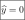
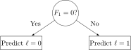
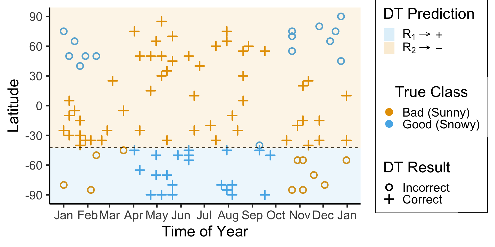

Week 12: Random Forests
DSAN 5000: Data Science and Analytics
Section 02
Tuesday, November 14, 2023
Looking Towards Regression
- How could we make a decision tree to predict \(y\) from \(x\) for this data?
Code
library(tidyverse)
library(latex2exp)
expr_pi2 <- TeX("$\\frac{\\pi}{2}$")
expr_pi <- TeX("$\\pi$")
expr_3pi2 <- TeX("$\\frac{3\\pi}{2}$")
expr_2pi <- TeX("$2\\pi$")
x_range <- 2 * pi
x_coords <- seq(0, x_range, by = x_range / 100)
num_x_coords <- length(x_coords)
data_df <- tibble(x = x_coords)
data_df <- data_df |> mutate(
y_raw = sin(x),
y_noise = rnorm(num_x_coords, 0, 0.15)
)
data_df <- data_df |> mutate(
y = y_raw + y_noise
)
#y_coords <- y_raw_coords + y_noise
#y_coords <- y_raw_coords
#data_df <- tibble(x = x, y = y)
reg_tree_plot <- ggplot(data_df, aes(x=x, y=y)) +
geom_point(size = g_pointsize / 2) +
dsan_theme("half") +
labs(
x = "Feature",
y = "Label"
) +
# geom_vline(
# xintercept = pi,
# linewidth = g_linewidth,
# linetype = "dashed"
# ) +
scale_x_continuous(
breaks=c(0,pi/2,pi,(3/2)*pi,2*pi),
labels=c("0",expr_pi2,expr_pi,expr_3pi2,expr_2pi)
)
reg_tree_plot
A Zero-Level Tree
- Trivial example: \(\widehat{y}(x) = 0\). (We ignore the feature value)
- How well does this do?

Code
library(ggtext)
# x_lt_pi = data_df |> filter(x < pi)
# mean(x_lt_pi$y)
data_df <- data_df |> mutate(
pred_sq_err0 = (y - 0)^2
)
mse0 <- mean(data_df$pred_sq_err0)
mse0_str <- sprintf("%.3f", mse0)
reg_tree_plot +
geom_hline(
yintercept = 0,
color=cbPalette[1],
linewidth = g_linewidth
) +
geom_segment(
aes(x=x, xend=x, y=0, yend=y)
) +
geom_text(
aes(x=(3/2)*pi, y=0.5, label=paste0("MSE = ",mse0_str)),
size = 10,
#box.padding = unit(c(2,2,2,2), "pt")
)
A One-Level Binary Tree
- Let’s introduce a single branch node:
\[ \widehat{y}(x) = \begin{cases} \phantom{-}\frac{2}{\pi} &\text{if }x < \pi, \\ -\frac{2}{\pi} &\text{otherwise.} \end{cases} \]

Code
get_y_pred <- function(x) ifelse(x < pi, 2/pi, -2/pi)
data_df <- data_df |> mutate(
pred_sq_err1 = (y - get_y_pred(x))^2
)
mse1 <- mean(data_df$pred_sq_err1)
mse1_str <- sprintf("%.3f", mse1)
decision_df <- tribble(
~x, ~xend, ~y, ~yend,
0, pi, 2/pi, 2/pi,
pi, 2*pi, -2/pi, -2/pi
)
reg_tree_plot +
geom_segment(
data=decision_df,
aes(x=x, xend=xend, y=y, yend=yend),
color=cbPalette[1],
linewidth = g_linewidth
) +
geom_segment(
aes(x=x, xend=x, y=get_y_pred(x), yend=y)
) +
geom_text(
aes(x=(3/2)*pi, y=0.5, label=paste0("MSE = ",mse1_str)),
size = 9,
#box.padding = unit(c(2,2,2,2), "pt")
)
Using Misclassification Loss to Choose a Split
- Given a parent region \(R_P\), we’re trying to choose a split into subregions \(R_1\) and \(R_2\) which will decrease the loss: \(\frac{|R_1|}{|R_P|}\mathscr{L}(R_1) + \frac{|R_2|}{|R_P|}\mathscr{L}(R_2) < \mathscr{L}(R_P)\)
- But what happens when we use misclassification loss to “judge” a split?

- Tl;dr this doesn’t “detect” when we’ve reduced uncertainty
- But we do have a function that was constructed to measure uncertainty!
Using Entropy to Choose a Split

The Space of All Decision Trees
- Why can’t we just try all possible decision trees, and choose the one with minimum loss? Consider a case with just \(N = 1\) binary feature, \(F_1 \in \{0, 1\}\):



Scikit-Learn: Growing the Tree
Code
import json
import pandas as pd
import numpy as np
import sklearn
from sklearn.tree import DecisionTreeClassifier
sklearn.set_config(display='text')
ski_df = pd.read_csv("assets/ski.csv")
ski_df['good_skiing'] = ski_df['good_skiing'].astype(int)
id_col = ski_df['obs_id']
X = ski_df[['day_num', 'latitude']]
y = ski_df['good_skiing']
dtc = DecisionTreeClassifier(
max_depth = 1,
criterion = "entropy"
)
dtc.fit(X, y);
y_pred = pd.Series(dtc.predict(X), name="y_pred")
result_df = pd.concat([id_col,X,y,y_pred], axis=1)
result_df['correct'] = result_df['good_skiing'] == result_df['y_pred']
result_df.to_csv("assets/ski_predictions.csv", index=False)
sklearn.tree.plot_tree(dtc, feature_names = X.columns)
n_nodes = dtc.tree_.node_count
children_left = dtc.tree_.children_left
children_right = dtc.tree_.children_right
feature = dtc.tree_.feature
feat_index = feature[0]
feat_name = X.columns[feat_index]
thresholds = dtc.tree_.threshold
feat_threshold = thresholds[0]
#print(f"Feature: {feat_name}\nThreshold: <= {feat_threshold}")
values = dtc.tree_.value
#print(values)
dt_data = {
'feat_index': feat_index,
'feat_name': feat_name,
'feat_threshold': feat_threshold
}
dt_df = pd.DataFrame([dt_data])
dt_df.to_feather('assets/ski_dt.feather')
Code
library(tidyverse)
library(arrow)
library(latex2exp)
r1_label <- TeX('$R_1 \\rightarrow +$')
r2_label <- TeX('$R_2 \\rightarrow -$')
# Load the dataset
ski_result_df <- read_csv("assets/ski_predictions.csv")
# Merge dates back in
ski_sample_day_df <- ski_sample |> select(obs_id, day)
ski_result_df <- ski_result_df |> left_join(ski_sample_day_df, by='obs_id')
#print(sort(ski_result_df$day_num))
# Load the DT info
dt_df <- read_feather("assets/ski_dt.feather")
# Here we only have one value, so just read that
# value directly
lat_thresh <- dt_df$feat_threshold
# And here we convert month_vec into a vector of
# day numbers
day_num_vec <- sapply(month_vec, lubridate::yday)
#print(day_num_vec)
ggplot() +
geom_point(
data=ski_result_df,
aes(x=day_num, y=latitude, color=factor(good_skiing), shape=correct),
size = g_pointsize / 1.5,
stroke = 1.5
) +
geom_hline(
yintercept = lat_thresh,
linetype = "dashed"
) +
geom_rect(
aes(xmin=-Inf, xmax=Inf, ymin=-Inf, ymax=-42.5, fill='R1'),
alpha=0.1
) +
geom_rect(
aes(xmin=-Inf, xmax=Inf, ymin=-42.5, ymax=Inf, fill='R2'),
alpha=0.1
) +
dsan_theme("half") +
labs(
x = "Time of Year",
y = "Latitude",
color = "True Class",
#shape = "Correct?"
) +
scale_shape_manual("DT Result", values=c(1,3), labels=c("Incorrect","Correct")) +
scale_fill_manual(
"DT Prediction",
values=c('R1'=cbPalette[2], 'R2'=cbPalette[1]),
labels=c('R1'=r1_label, 'R2'=r2_label)
) +
scale_color_manual("True Class", values=c(cbPalette[1], cbPalette[2]), labels=c("Bad (Sunny)","Good (Snowy)")) +
scale_x_continuous(
breaks=c(day_num_vec,366),
labels=c(month_labels,"Jan")
) +
scale_y_continuous(
breaks=lat_vec
)
\[ \begin{align*} \mathscr{L}(R_1) &= -\left[ \frac{13}{25}\log_2\frac{13}{25} + \frac{12}{25}\log_2\frac{12}{25} \right] \approx 0.999 \\ \mathscr{L}(R_2) &= -\left[ \frac{61}{75}\log_2\frac{61}{75} + \frac{14}{75}\log_2\frac{14}{75} \right] \approx 0.694 \\ %\mathscr{L}(R \rightarrow (R_1, R_2)) &= \Pr(x_i \in R_1)\mathscr{L}(R_1) + \Pr(x_i \in R_2)\mathscr{L}(R_2) \\ \mathscr{L}(R_1, R_2) &= \frac{1}{4}(0.999) + \frac{3}{4}(0.694) \approx 0.77 < 0.827~😻 \end{align*} \]
High Variance, Low Bias

The Wisdom of Sheep
- Unfortunately, the “wisdom of crowds” phenomenon only works if everyone in the crowd is unable to communicate
- The minute people tasked with making decisions as a group begin to communicate (long story short), they begin to follow charismatic leaders
 , and the effect goes away (biases no longer cancel out)
, and the effect goes away (biases no longer cancel out) - The takeaway for effectively training random forests: ensure that each tree has a separate (ideally orthogonal) slice of the full dataset, and has to infer labels from only that slice!
Bootstrapped Trees

Boosting
- Rather than giving each subtree a random subset of features, we grow trees sequentially, asking each subtree to explain the unexplained variance which remains from the previous step
- Step 1: \(\widehat{f}_1(X)\) = DT for \(X \rightarrow Y\)
- Step \(t+1\): \(\widehat{f}_{t+1}(X)\) = DT for \(X \rightarrow \left(\widehat{f}_t(X) - Y\right)\)
- Explain the error here:
Code
library(ggtext)
# x_lt_pi = data_df |> filter(x < pi)
# mean(x_lt_pi$y)
data_df <- data_df |> mutate(
pred_sq_err0 = (y - 0)^2
)
mse0 <- mean(data_df$pred_sq_err0)
mse0_str <- sprintf("%.3f", mse0)
reg_tree_plot +
geom_hline(
yintercept = 0,
color=cbPalette[1],
linewidth = g_linewidth
) +
geom_segment(
aes(x=x, xend=x, y=0, yend=y)
) +
geom_text(
aes(x=(3/2)*pi, y=0.5, label=paste0("MSE = ",mse0_str)),
size = 10,
#box.padding = unit(c(2,2,2,2), "pt")
)
- Explain remaining error:
Code
get_y_pred <- function(x) ifelse(x < pi, 2/pi, -2/pi)
data_df <- data_df |> mutate(
pred_sq_err1 = (y - get_y_pred(x))^2
)
mse1 <- mean(data_df$pred_sq_err1)
mse1_str <- sprintf("%.3f", mse1)
decision_df <- tribble(
~x, ~xend, ~y, ~yend,
0, pi, 2/pi, 2/pi,
pi, 2*pi, -2/pi, -2/pi
)
reg_tree_plot +
geom_segment(
data=decision_df,
aes(x=x, xend=xend, y=y, yend=yend),
color=cbPalette[1],
linewidth = g_linewidth
) +
geom_segment(
aes(x=x, xend=x, y=get_y_pred(x), yend=y)
) +
geom_text(
aes(x=(3/2)*pi, y=0.5, label=paste0("MSE = ",mse1_str)),
size = 9,
#box.padding = unit(c(2,2,2,2), "pt")
)